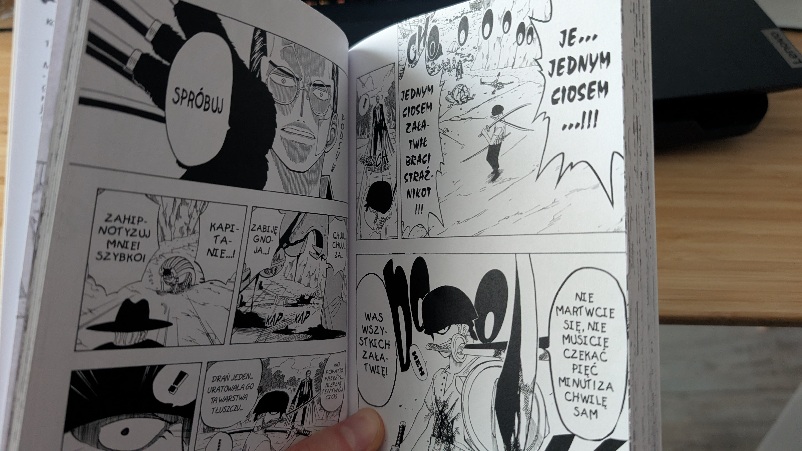
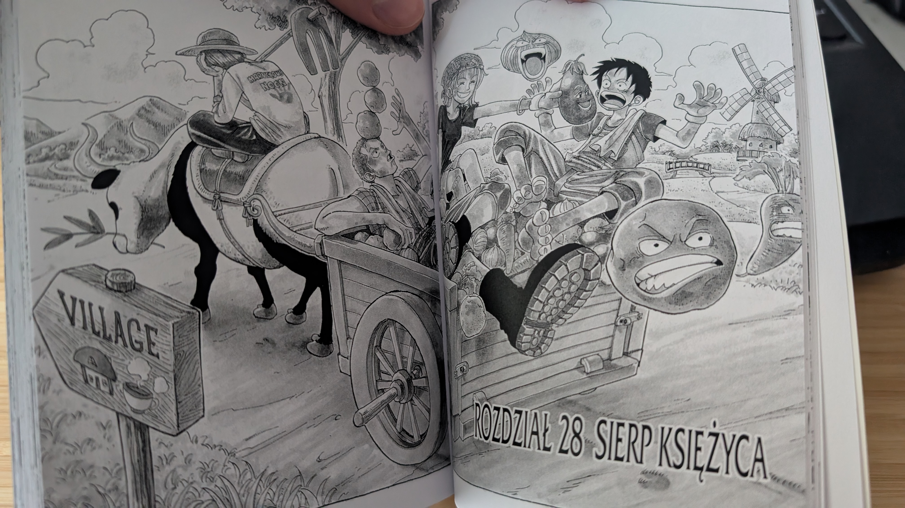

Lies, Claws, and the Heart of a Pirate: A Review of One Piece, Vol. 4

When we look back at classic shonen manga, early story arcs rarely surprise us beyond the standard formula: meet an ally, beat the villain, move on. Yet back in 1998, Eiichiro Oda was already demonstrating that his magnum opus had no intention of taking the easy route. The fourth volume of One Piece, titled Crescent Moon, plunges straight into the darkest and most emotional beats of the Syrup Village Arc. If the first three volumes felt like a lighthearted warmup in the East Blue, volume four quickly challenges those expectations.
The Boy Who Cried Pirate
The start of Usopp's storyline initially looked like comic relief after the clash with Buggy: a goofy, long-nosed mythomaniac running from his own insecurities while entertaining the ailing heiress Kaya with tall tales. In volume four, however, Oda brutally shatters that childish facade. When Usopp uncovers that Klahadore, the quiet, impeccably mannered butler, is secretly Captain Kuro - a ruthless pirate who faked his death and plotted for three years to usurp Kaya’s inheritance-the manga shifts tone sharply. Usopp's tragedy is that no one in the village believes him. He is left entirely alone with the truth, and his chronic lies turn into his worst nightmare. This dynamic elevates the arc far above average shonen fare. Usopp doesn't decide to stand his ground because he is powerful. He fights so that the villagers can continue believing he is a liar-just to keep their peaceful lives intact. That self-sacrifice is where the true heart of his character is born.
Captain Kuro: Cold Calculation Over Brute Force
The antagonist is easily one of the volume's greatest highlights. Kuro of the Black Cat Pirates represents a stark departure from the eccentric Buggy or the hot-tempered Morgan. He is chilling, methodical, exhausted by pirate chaos, and completely indifferent to the lives of his own crew. His fighting style, built around lethal speed and signature cat-claw gloves, brings the kind of kinetic dynamism you would expect from a fast-paced action game. His signature technique, the *Nukiashi* (and subsequent *Shakushi*), moves faster than the human eye can track, demanding genuine respect. Crucially, his fatal flaw-a blind rampage that slashes down friend and foe alike-creates a brilliant ideological foil to Luffy, for whom loyalty to his nakama is sacred.
Anatomy of a Battle: Teamwork and Coastal Chaos
Oda orchestrates the clash on the beach slopes with exceptional pacing. Before the decisive duels even begin, we get a dose of tactical disarray:
- The comedic misdirection - Luffy and company misjudge the cliffs, forcing a frantic sprint to the opposite side of the island.
- A stage for the swordsman - Zoro takes on the hypnotist Jango and the Nyaban Brothers (Sham and Buchi), giving readers an early showcase of his absurd pain tolerance and technical finesse with a single blade.
- Luffy’s leadership - While Luffy remains goofy and impulsive at times, he demonstrates cold, unwavering composure when the situation calls for a true captain.

The Verdict
Volume 4 is a foundational turning point for the structure of One Piece. It cements the core thematic engine of the East Blue saga: each new companion must confront their past and forge their own definition of courage before boarding the crew. For shonen enthusiasts, retro manga lovers, and anyone invested in character-driven adventure, this is an essential read. The series is catching wind in its sails, and on the horizon, an iconic caravel is about to make its debut. How do you look back on Captain Kuro all these years later? Does his slick suit-and-claws aesthetic still hold up as one of the best early villain designs, or did the Syrup Village skirmish drag out for you compared to the Baratie? Let us know in the comments below!